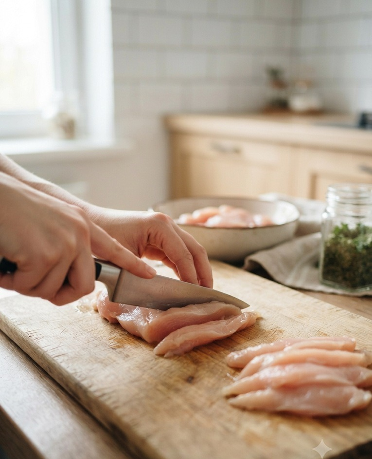
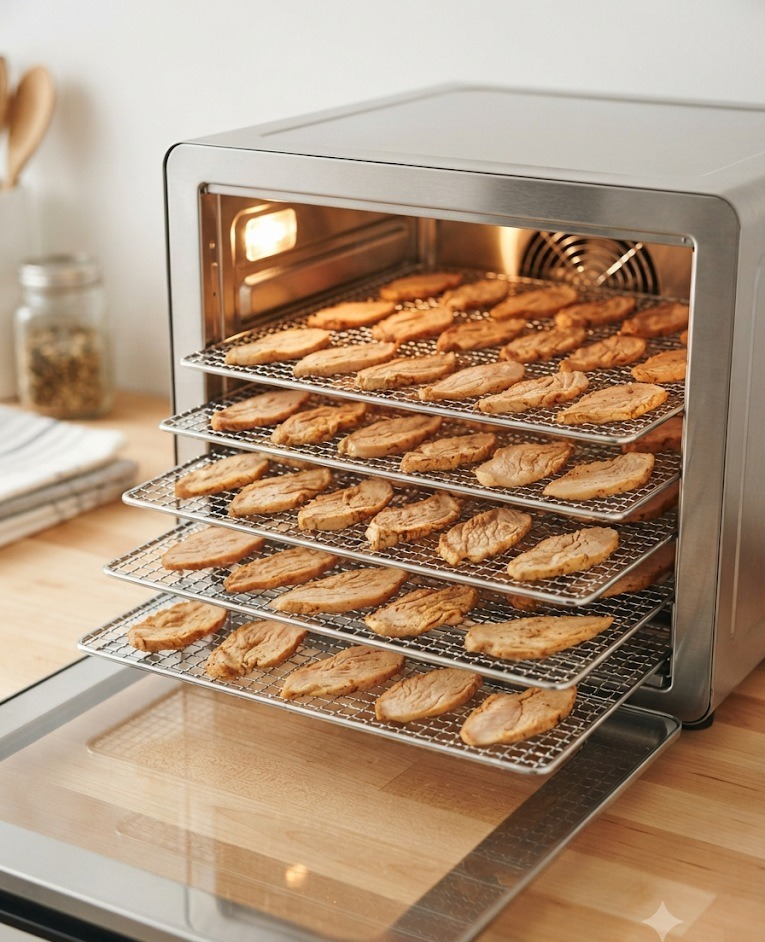
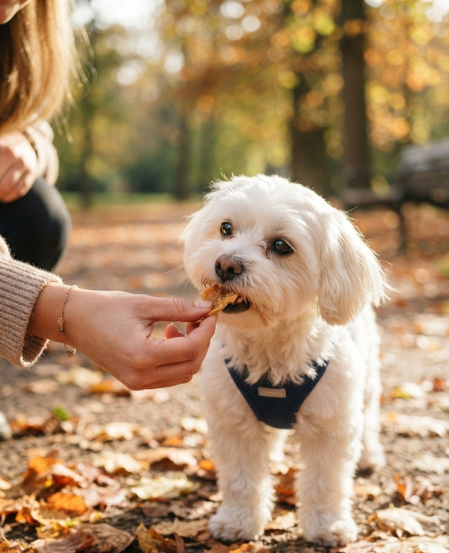
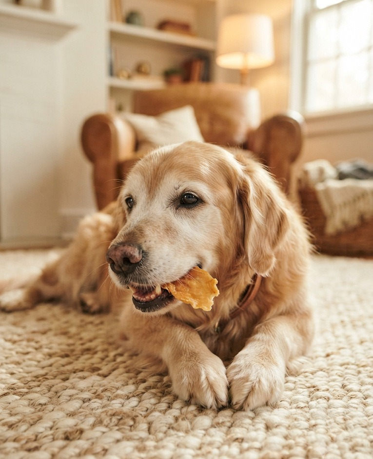

DETAIL
가까이 들여다보면
더 안심돼요


국내산 닭가슴살만 얇게 썰어 천천히 말린 수제 간식.
우리 아이 입에 들어가는 거니까, 보호자가 먼저 안심할 수 있게.

그래서 재료는 하나, 과정은 정직하게
매일 조금씩 직접 만들어요

결이 그대로 살아 있는 진짜 닭가슴살 (예시)
섞지 않고, 붙이지 않고, 썰어서 말리기만 했어요.
알레르기가 걱정되는 아이도 성분이 단순해 확인이 쉬워요.
높은 온도로 빨리 말리지 않아요.
결을 살려 말려야 씹는 맛도 향도 살아요.

우리 아이 입에 들어가는 거니까.
고소한 닭 향에 간식 봉투 소리만 들려도 달려와요.
| 일반 대량 간식 | 닭가슴살 수제간식 | |
|---|---|---|
| 원재료 | 여러 가지 혼합 | 닭가슴살 하나 |
| 첨가물 | 보존료·향미제 | 넣지 않아요 |
| 건조 방식 | 고온 단시간 | 저온 8시간 |
| 식감 | 딱딱하고 질김 | 결대로 찢어지는 식감 |
| 제조 | 대량 공장 | 소량 수제 (예시) |
※ 일반적인 제품과 비교한 예시 기준이에요
산책 다녀와서, 훈련 끝나고, 그냥 예뻐서.


매일 아침, 그날 쓸 만큼만 손질해서 말려요.

기름기와 힘줄을 걷어 내고, 결을 따라 고른 두께로 썰어요. 두께가 같아야 고르게 말라요.

트레이에 겹치지 않게 한 장씩 펼쳐 천천히 말려요. 서두르지 않아야 결이 살아요.
간식은 결국 함께 보내는 시간이라고 생각해요.
산책길에 하나, 잘했다고 하나. 그 작은 순간이 오래 남도록
재료는 단순하게, 과정은 정직하게 만들어요.

※ 간식은 하루 열량의 10% 이내로 · 처음엔 조금씩 반응을 확인해 주세요

| 제품명 | 닭가슴살 수제간식 (예시) |
| 원재료 | 닭가슴살 100% (국내산 · 예시) |
| 중량 | 100g / 200g |
| 급여 대상 | 생후 3개월 이상 모든 견종 |
| 보관 | 냉동 보관 · 해동 후 3일 이내 급여 |
| 유통기한 | 냉동 기준 제조일로부터 6개월 |
※ 점선 칸은 판매자님의 실제 인증서·시험 성적서로 채워지는 자리예요
판매가 시작되면 실제 구매 고객의 사진 후기로 채워요.
가짜 후기는 넣지 않아요.
닭가슴살 하나라 괜찮지만, 작게 잘라 소량부터 주세요.
생후 3개월 이후부터, 잘게 찢어서 주세요.
실온에 10분 정도 두었다가 주세요.
닭에 알레르기가 없다면 성분이 단순해 비교적 안심이에요. 수의사와 상의해 주세요.
2주·4주 간격 정기 배송을 선택할 수 있어요 (예시).
오늘 산책 끝나고,
꼬리 흔드는 한 입
※ 찰칵상세 제작 예시 · 브랜드와 상품 정보는 예시로 만든 내용이에요